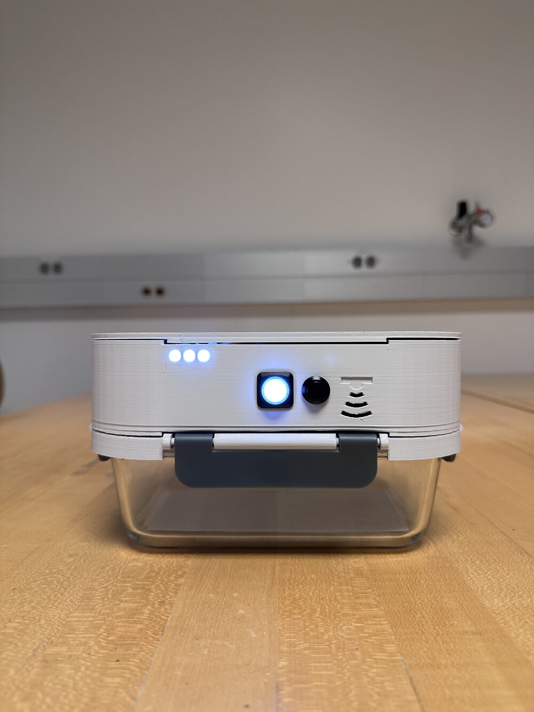

Mechanical engineering with a product designer's eye.
I'm a mechanical engineer in automotive exterior design, focused on how a product looks, feels, and works in someone's hands.
This site documents my projects and the thinking behind them. Start with the UV food storage case study below.

Chasing what makes a product good.
I'm a mechanical engineer on an automotive exterior design team, working across mirrors, wiper systems, garnishes, and glass. I turn the styling studio's concepts into production-ready 3D data, focused on the fit and finish that makes a product feel precise instead of careless. Ohio State ME, design thinking minor.
What pulls at me is product design: the small details that separate a good product from an average one. I like packaging electronics and interfaces into hardware that looks and feels resolved, and I study good design everywhere, from podcasts and books to an obsessive hunt for the right backpack or pair of headphones. Long term, I want to build consumer hardware that earns that kind of attention.
What I bring to a hardware team.
CAD & Surfacing
- CATIA V5 & V6 (Class-A surfacing)
- Parametric solid modeling
- Exterior / enclosure design
Manufacturing
- Design for Manufacturing (DFM)
- Injection-molded plastics
- Glass & motion mechanisms
Product & Process
- Design Thinking (minor)
- Tolerance stack-up / GD&T
- Prototyping & 3D printing
Projects & case studies.

UV Food Storage
A UV-C food storage lid that slows produce spoilage, built around a two-button interface anyone can use without a manual, and an inductive charging system I designed for real kitchens. Read the case study →
Get in touch.
Open to conversations about consumer hardware, mechanisms, and exterior systems.